── Attaching core tidyverse packages ──────────────────────── tidyverse 2.0.0 ──
✔ dplyr 1.1.4 ✔ readr 2.1.5
✔ forcats 1.0.0 ✔ stringr 1.5.1
✔ ggplot2 3.5.0 ✔ tibble 3.2.1
✔ lubridate 1.9.3 ✔ tidyr 1.3.1
✔ purrr 1.0.2
── Conflicts ────────────────────────────────────────── tidyverse_conflicts() ──
✖ dplyr::filter() masks stats::filter()
✖ dplyr::lag() masks stats::lag()
ℹ Use the conflicted package (<http://conflicted.r-lib.org/>) to force all conflicts to become errors
Attaching package: 'scales'
The following object is masked from 'package:purrr':
discard
The following object is masked from 'package:readr':
col_factor
Attaching package: 'ggdag'
The following object is masked from 'package:stats':
filter
Loading required package: vctrs
Attaching package: 'vctrs'
The following object is masked from 'package:dplyr':
data_frame
The following object is masked from 'package:tibble':
data_frame
Loading required package: data.table
Attaching package: 'data.table'
The following objects are masked from 'package:lubridate':
hour, isoweek, mday, minute, month, quarter, second, wday, week,
yday, year
The following objects are masked from 'package:dplyr':
between, first, last
The following object is masked from 'package:purrr':
transpose
WFDB software detected and set as `options(wfdb_path = '/usr/local/bin')`Autonomic and Structural Mechanisms in Atrial Fibrillation
T32/TPIPCVM Seminar
Introduction
About Me
. . .
- Doctorate of Medicine, Texas A&M University (2012-2016)
- Internal Medicine Resident at the Emory University J. Willis Hurst Internal Medicine Residency (2016-2019)
- Postdoctoral Research Fellow in the TL1 Scholars Program at Emory University
- Master of Science, Rollins School of Public Health, Emory University (2019-2020)
. . .
- General Cardiology Fellow at University of Illinois Chicago (2020-2024)
- Research Fellow in the T32 Training Program in Personalized Cardiovascular Medicine (TPIPCVM) (2022-2024)
- Principle Investigator of F32 Award (2022-2024)
. . .
- Clinical Cardiac Electrophysiology Fellow at the University of Utah (2024-2026)
Funding
NIH/NHLBI
- F32HL154707
- T32HL139439
- T32HL130025
- R01HL150586
NIH/NCATS
- TL1TR002382
- UL1TR002378
No Disclosures
| Abbreviations | Definitions |
|---|---|
| (p)AF | (paroxysmal) atrial fibrillation |
| AAD | anti-arrhythmic drugs |
| ANS/SNS/PNS | autonomic/sympathetic/parasympathetic nervous sytem |
| CAD, MI | coronary artery disease, myocardial ischemia/infarction |
| EPS, EAM | electrophysiology study, electro-anatomical mapping |
| GP | ganglionated plexi |
| HF, LF HRV | high & low frequency heart rate variability |
| LA, RA, LV, RV | left/right atrium/ventricle |
| NPY, Gal | neuropeptide Y, galanin |
| SNS/VNS | sympathetic/vagal nerve stimulation |
A consistent color scheme is provided throughout.
. . .
- Computational & digital signal processing methods will be noted in green
- Clinical data that requires a physician or cardiologist to obtain are noted in red
- Arrhythmia and electrical focused work is noted in yellow
- Epidemiological or genetic based methods are noted in blue
Objectives
- Know the general clinical mechanisms in arrhythmogenesis
- Differentiate between substrate and trigger contributions
- Understand methods to evaluate structural changes
- Recognize autonomic influences on arrhythmogenesis
Outline
- Historical context of atrial fibrillation
- Importance of both autonomic, structural, and triggered factors
- Comparative anatomy and physiology
- Coumel’s triangle of arrhythmology
- Substrate considerations in arrhythmic risk
- Phenotyping substrates
- Genetic variants in atrial myopathy
- Autonomic influences in arrhythmic risk
- Neurocardiac axis
- Mental stress pathways
- Future directions
Historical Context
Atrial fibrillation overview
A supraventricular tachyarrhythmia characterized by uncoordinated atrial activation with subsequent deterioration of atrial mechanical function
- Most common sustained arrhythmia in adults
- ~40% develop AF after age of 55 years (Michaud and Stevenson 2021)
- Risk factors include: age, CAD, male sex, European ancestry, hypertension, obesity, smoking, sleep apnea, family history of AF in relatives
- 20% of new diagnoses are secondary to acute precipitant (e.g. surgery, pneumonia)
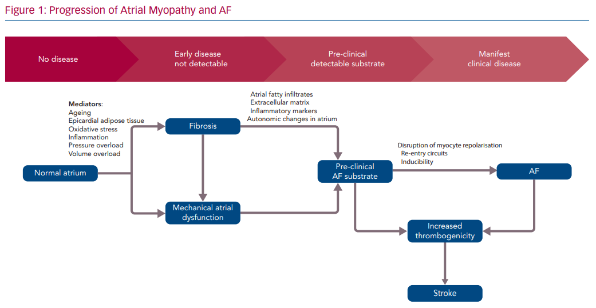
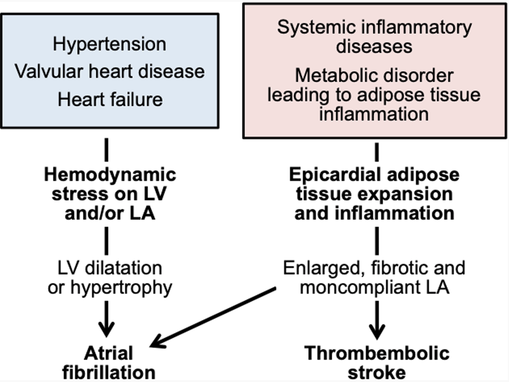
Outline
- Historical context of atrial fibrillation
- Importance of both autonomic, structural, and triggered factors
- Comparative anatomy and physiology
- Coumel’s triangle of arrhythmology
- Substrate considerations in arrhythmic risk
- Phenotyping substrates
- Genetic variants in atrial myopathy
- Autonomic influences in arrhythmic risk
- Neurocardiac axis
- Mental stress pathways
- Future directions
Comparative physiology
- Larger atria are seen in larger mammals, such as elephants and whales, proportional to allometric scaling (Figure 3)
- Prevalence of AF is not consistently associated with atrial size, e.g. Figure 5
- Atrial fibrillation is the most common cardiac abnormality in horses (Decloedt et al. 2020), but rare in underwater mammals
- Atrial arrhythmias in aquatic mammals are related to diving (baroreceptor and diving reflexes), shown in Figure 6
Is there more to atrial fibrillation than atrial size?
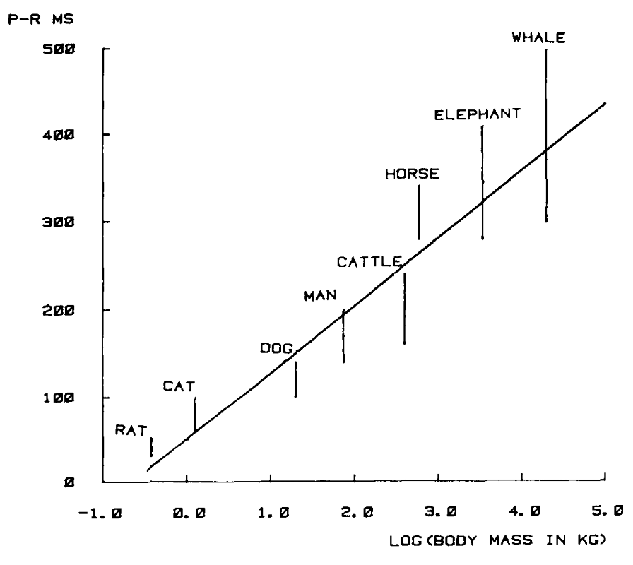
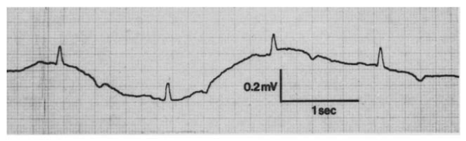
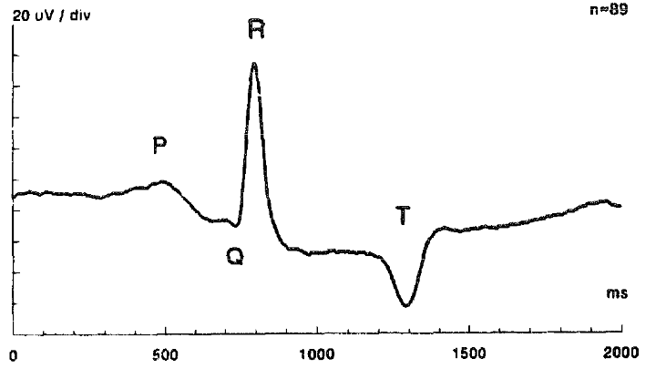
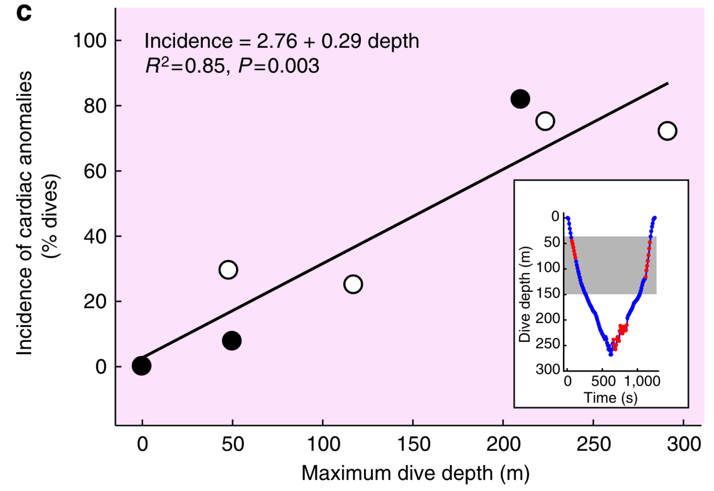
Outline
- Historical context of atrial fibrillation
- Importance of both autonomic, structural, and triggered factors
- Comparative anatomy and physiology
- Coumel’s triangle of arrhythmology
- Substrate considerations in arrhythmic risk
- Phenotyping substrates
- Genetic variants in atrial myopathy
- Autonomic influences in arrhythmic risk
- Neurocardiac axis
- Mental stress pathways
- Future directions
Arrhythmia mechanisms
Multiple mechanisms are at play in AF simultaneously in AF, and may manifest in a similar fashion.
Antzelevitch and Burashnikov (2011):
- Re-entry functionally or around scar/fibrosis
- Local firing due to increased/enhanced automaticity
- Triggered activity due to early or delayed afterdepolarizations
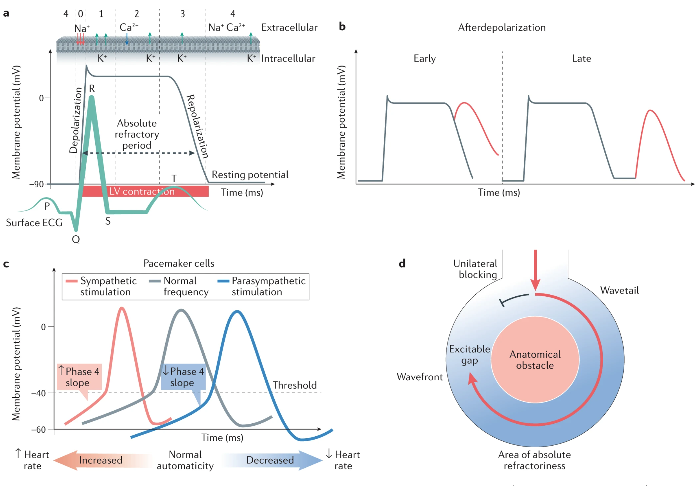

Coumel’s triangle
dag <-
dagify(
ans ~~ substrate,
trigger ~~ ans,
substrate ~~ trigger,
exposure = 'ans',
outcome = 'substrate',
labels = list(
ans = 'Autonomic Factors',
trigger = 'Pulmonary and Extrapulmonary Triggers',
substrate = 'Atrial Substrate'
)
) |>
tidy_dagitty(layout = 'tree') |>
node_status()
ggplot(dag, aes(x = x, y = y, xend = xend, yend = yend, color = status)) +
geom_dag_edges(
#arrow_directed = grid::arrow(length = grid::unit(20, "pt"), type = "closed"),
arrow_bidirected = grid::arrow(length = grid::unit(20, "pt"), type = "closed", ends = "both"),
edge_alpha = 0.9,
curvature = 0.0
) +
geom_dag_point(size = 20) +
geom_dag_label_repel(
aes(label = label),
force = 0,
alpha = 0.9,
size = 8
) +
scale_color_manual(values = c("exposure" = "#f0941f", "outcome" = "#196774"), na.value = "#363432") +
theme_dag(legend.position = "none")
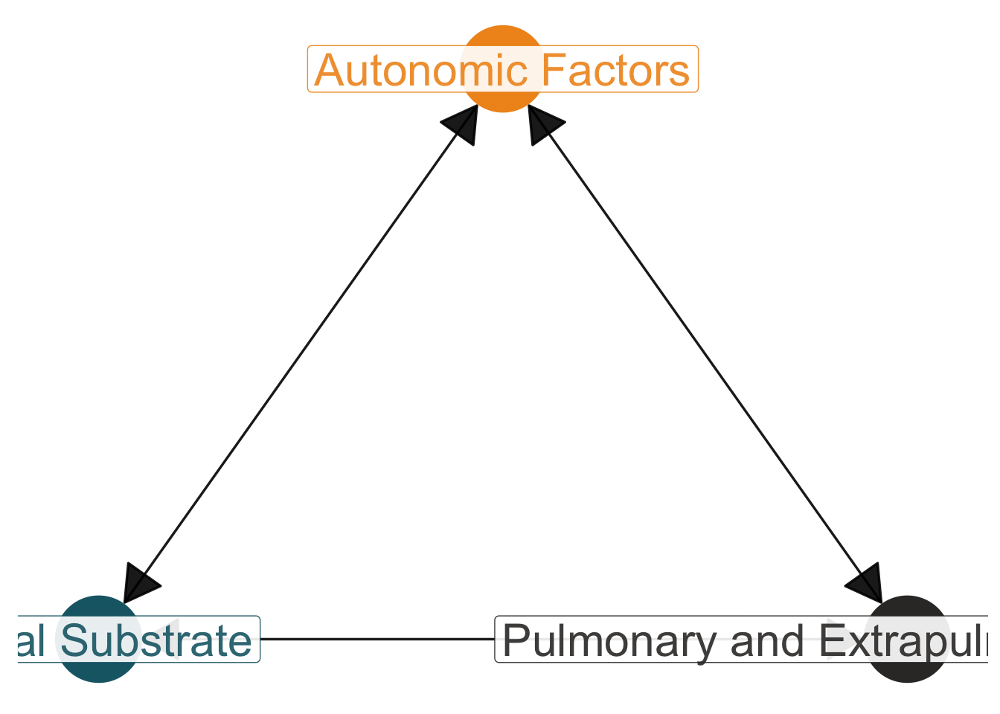
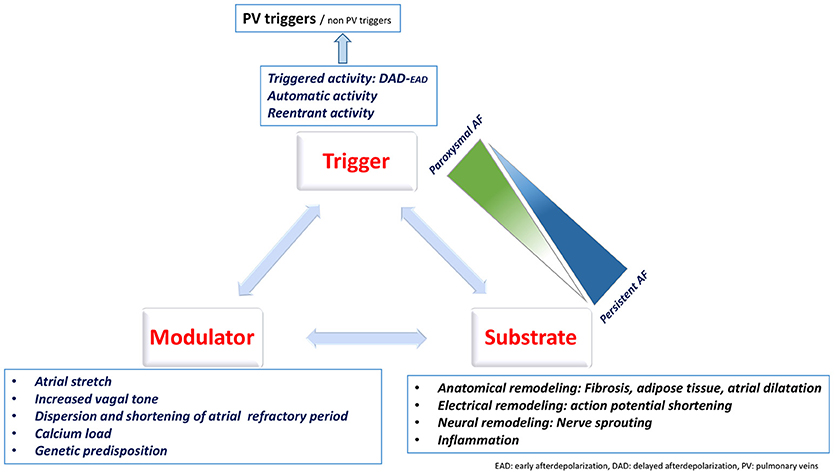
Differential contributions
- Spectrum between trigger-predominant and substrate-predominant
- Length of episodes of AF are related to both triggers and substrate
- Staccato subtypes are short and frequent, but predominantly in lower-burden patients
- Legato subtypes are long and infrequent, but predominantly in higher-burden patients
- Underlying mechanism of arrhythmia likely vary between these types in terms of onset and maintenance of arrhythmia
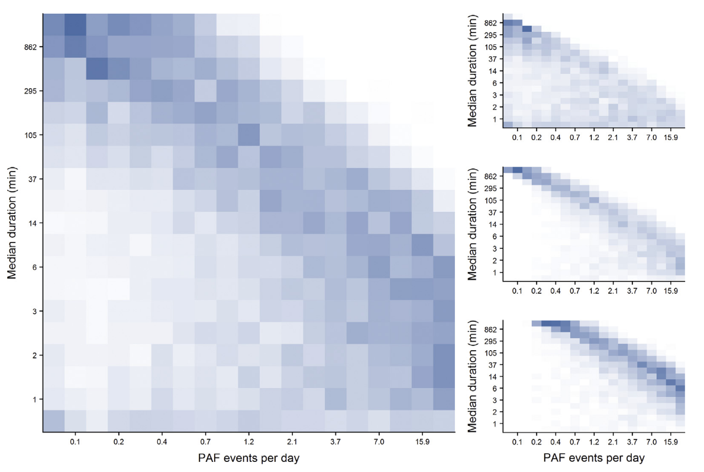
Outline
- Historical context of atrial fibrillation
- Importance of both autonomic, structural, and triggered factors
- Comparative anatomy and physiology
- Coumel’s triangle of arrhythmology
- Substrate considerations in arrhythmic risk
- Phenotyping substrates
- Genetic variants in atrial myopathy
- Autonomic influences in arrhythmic risk
- Neurocardiac axis
- Mental stress pathways
- Future directions
Substrate Considerations
Fibrosis and scar
- AF is sustained predominantly through re-entry mechanisms
- Scar and low-voltage areas become regions for functional re-entry
- Therapeutic strategies have targeted limiting the available area for re-entry to occur (Calkins et al. 2017)
- Catheter ablation, with 60-90% 1-year AF-free survival
- Surgical maze procedure, with 80% success
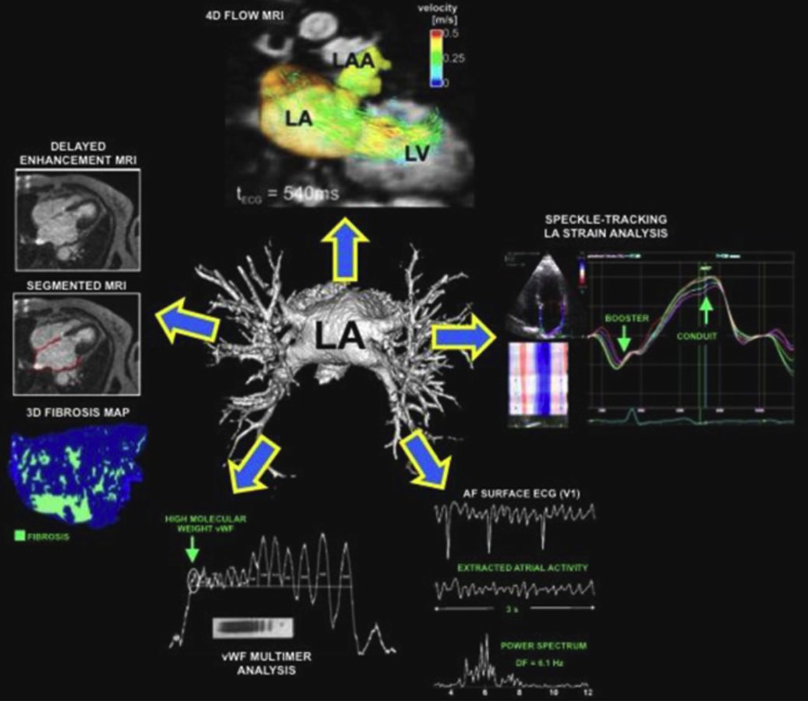
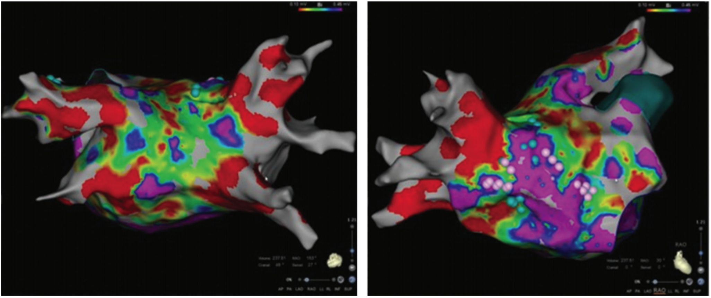
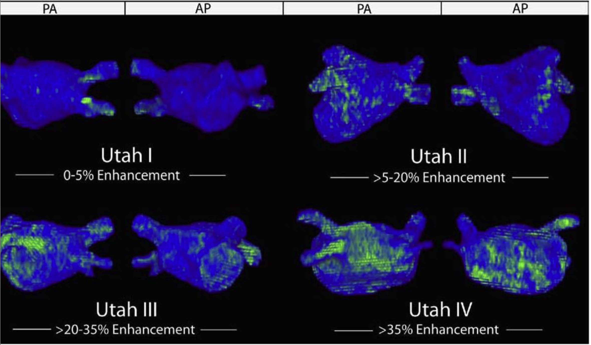
Outline
- Historical context of atrial fibrillation
- Importance of both autonomic, structural, and triggered factors
- Comparative anatomy and physiology
- Coumel’s triangle of arrhythmology
- Substrate considerations in arrhythmic risk
- Phenotyping substrates
- Genetic variants in atrial myopathy
- Autonomic influences in arrhythmic risk
- Neurocardiac axis
- Mental stress pathways
- Future directions
Genetic influences on substrate
- A modifier of cardiac substrate are genetic variants
- Choi et al. (2018) identified TTN loss-of-function variants and early-onset AF (most commonly associated genetic variation with AF)
- Manifestation of atrial fibrillation occurs through atrial myopathy, which may be identified through different imaging modalities including ECG (Verweij et al. 2020)
ECG prediction of TTN variants
Background: VUS/LP/P TTN variants may cause structural atrial changes (an atrial myopathy) and/or conduction changes.
Proposal: Using the TTN gene as a case study, ECG features can be extracted that classify and identify samples with deleterious variants, based on in silico predictors (PolyPhen, SIFT, REVEL), in a population with AF.
Approach: Utilize sinus rhythm ECGs from patients with WES/CGS with paroxysmal AF. Develop beat-by-beat algorithm to identify features that may be associated with VUS/LP/P TTN variants.
ECG data
n = 298patients were available and had ECG in sinus rhythm at some point from 2010 to 2023- This amounted to
n = 7953unique ECG that were thought to be in sinus rhythm - Using a wavelet-decomposition approach, identified morphology of P wave, QRS complex, and T wave and created single-beat structures
- Using these
n = 51493beats, there weren = 6202cases (which representsn = 36individuals with potential pathogenic TTN variants (based on SIFT/PolyPhen scores) - Convoluted neural network approach to classify cases/controls
fp <- system.file('extdata', package = 'shiva')
nsr <- shiva::read_wfdb('muse-sinus', record_dir = fp, annotator = 'ecgpuwave')
nsr<Electrical Signal>
-------------------
Recording Duration: 10 seconds
Recording frequency 500 hz
Number of channels: 12
Channel Names: I II III AVF AVL AVR V1 V2 V3 V4 V5 V6
Annotation: ecgpuwavefp <- system.file('extdata', package = 'shiva')
nsr <- read_wfdb('muse-sinus', record_dir = fp, annotator = 'ecgpuwave')
ggm(nsr)

Initial results
Training sample
- Training accuracy was
88%with2%loss after total of 10 steps - Visualized in Figure 14
Testing sample
- Testing accuracy was
85%with13%loss - Example: single beat (control) may have a confidence of
75%in being a control
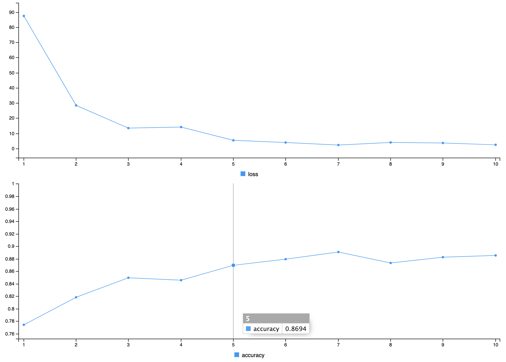
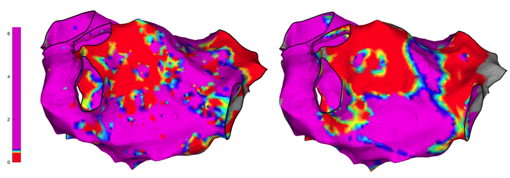
Next steps
- Evaluate model-explainability (e.g. how heavily P-wave morphology influences confidence)
- Expand to additional genes associated with AF
- Validate in a larger cohort
- Correlate with intracardiac EGM and EAM findings
Outline
- Historical context of atrial fibrillation
- Importance of both autonomic, structural, and triggered factors
- Comparative anatomy and physiology
- Coumel’s triangle of arrhythmology
- Substrate considerations in arrhythmic risk
- Phenotyping substrates
- Genetic variants in atrial myopathy
- Autonomic influences in arrhythmic risk
- Neurocardiac axis
- Mental stress pathways
- Future directions
Autonomic Influences
Neurocardiac axis
- Neurocardiac axis is a hierarchical system of SNS and PNS afferent/efferent circuits that interact at multiple levels (Armour et al. 1997)
- Cortex ↔︎ brainstem
- Spinal cord ↔︎ extracardiac ganglia (e.g. stellate)
- Intrinsic cardiac nervous system (ICNS) ↔︎ heart
- Autonomic regulation is critical in the development of most CV disease
- Dysregulated catecholamines in heart failure
- Post myocardial infarct VF
- Triggered arrhythmias such as VT
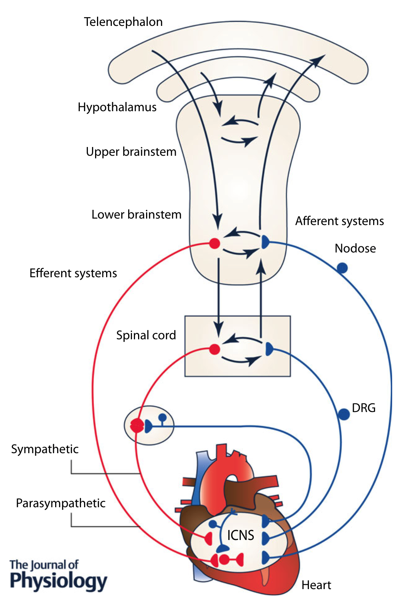
- Lower levels of networked structures (ICNS, hypothalamus) integrate afferent information about metabolic demands
- Higher levels of networked structures (amydala, cortex) integrate lower networks and generate conscious/unconscious CV state representations
- Allows for environmental/psychological factors to interplay with cardiac physiology, e.g. mental stress causing arrhythmia
Evolution of treatment
- Haïssaguerre et al. (1998) identified pulmonary vein triggers for AF (associated with AF approximately 50% of the time)
- Pappone et al. (2004) identified ganglionic plexi as targets for AF ablation (34% of patients in the study had complete denervation, and had less AF recurrence)
- Narayan, Krummen, and Rappel (2012) identified rotors as targets for AF ablation (rotors were identified in 98% of patients, and 86% of patients had AF termination)
- Báez-Escudero et al. (2014) found parasympathetic denervation using alcohol infusion into the Vein of Marshall led to decreased AF burden
- GANGLIA-AF, paroxysmal AF randomized to PVI or atrial GP ablation, decreased AAD dosages in GP group, n = 102 (M.-Y. Kim et al. 2022)
Pulmonary vein isolation is a component to the treatment of AF, but additional pathways exist that have need to be explored.
Outline
- Historical context of atrial fibrillation
- Importance of both autonomic, structural, and triggered factors
- Comparative anatomy and physiology
- Coumel’s triangle of arrhythmology
- Substrate considerations in arrhythmic risk
- Phenotyping substrates
- Genetic variants in atrial myopathy
- Autonomic influences in arrhythmic risk
- Neurocardiac axis
- Mental stress pathways
- Future directions
Perturbations to the ANS
Chronic mental stress:
- Inflammatory mechanisms (Hammadah, Sullivan, et al. 2018; Pollitt et al. 2008)
- Autonomic mechanisms (Carney, Freedland, and Veith 2005; Huang et al. 2018; Penninx 2017; Smolderen et al. 2017)
- Associated with many changes to cardiac physiology (Strike and Steptoe 2003)
Acute mental stress:
- Peripheral vasoconstriction (J. H. Kim et al. 2019; Lima et al. 2019)
- Coronary vasomotion (Hammadah, Kim, et al. 2018)
- Mental stress-induced myocardial ischemia (Vaccarino2021a?), as seen in Figure 17

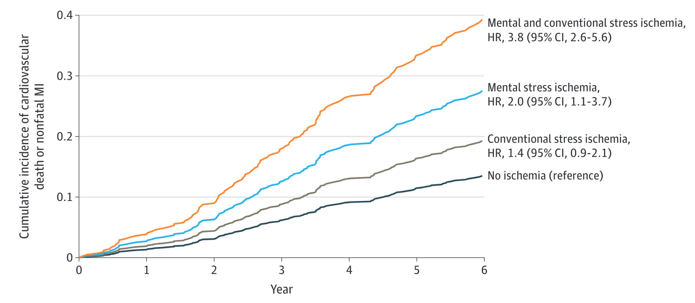
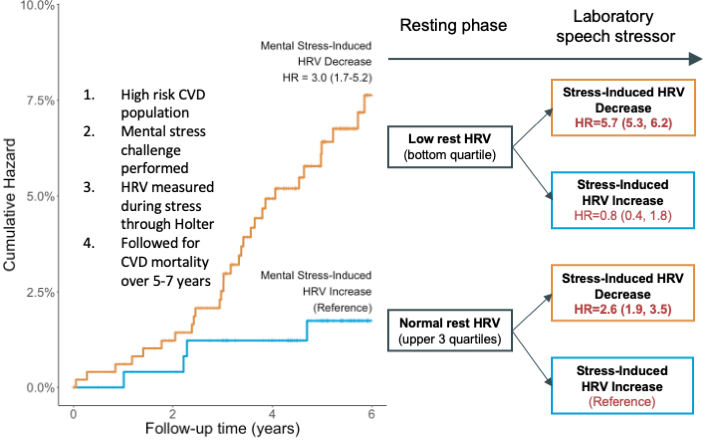
Sympathovagal crosstalk
- Atria are heavily innervated by autonomic ganglionic plexi, leading to the complex activity that regulates cardiac conductive properties (Hoover et al. 2009; Armour et al. 1997)
- Intracardiac cross-talk between adrenergic (sympathetic) and cholinergic (vagal) neurons in the hierarchy of neurocardiac axis is critical for arrhythmogenesis during stress
- Sympathetic/adrenergic neurons release catecholamines (NE) that directly affect the myocardium
- NPY and galanin is also released, which both inhibit cholinergic activity and lead to vagolytic effects (Kalla et al. 2020; Herring et al. 2008, 2012; Herring2015a?)
- Galanin released as a adrenergic co-transmitter, binding to GalR1 receptors
- NPY binds to cholinergic neurons through the Y2 receptor
- NPY receptors exist along the neurocardiac axis, including adrenal medulla (Y3) and cardiac tissue (Y2) (Coote 2013)

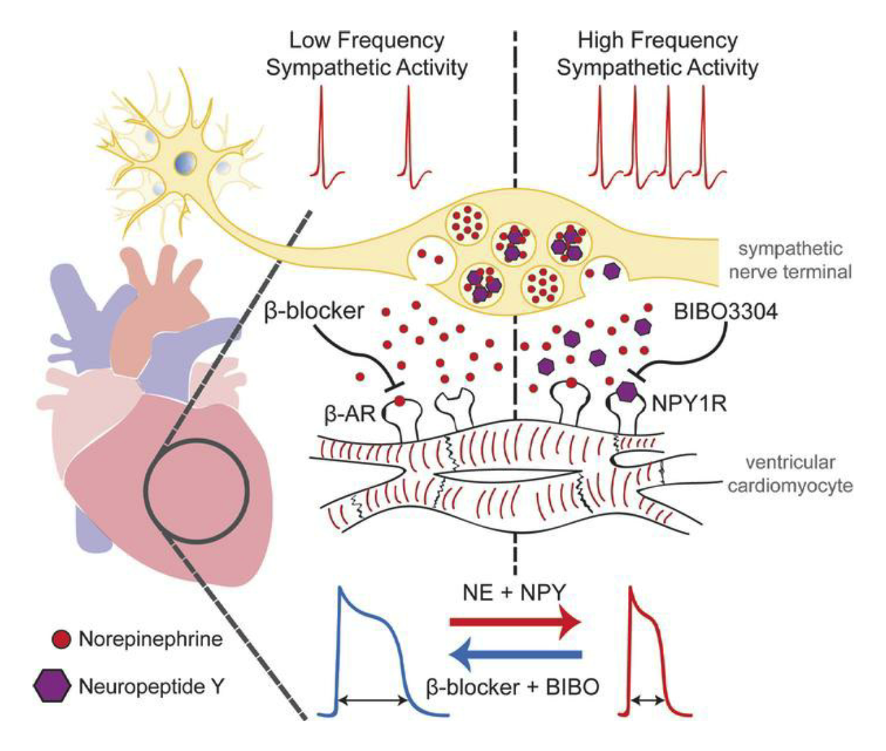
Action potential duration
Narayan et al. (2011) found that prior to the onset of atrial fibrillation, APD alternans occurred, measured through a monophasic action potential catheter (in humans).
- Pulmonary veins have higher resting membrane potential, lower amplitude of action potential, and shortened APD
- Premature beats or pulmonary vein triggers likely automatic or triggered related to calcium handling abnormalities
- Electrical remodeling alters ion expression, reducing inward \(Ca^{2+}\) currents and enhances inward \(K^{+}\) currents, leading to shorter APD (stabilizing reentrant circuits in AF)
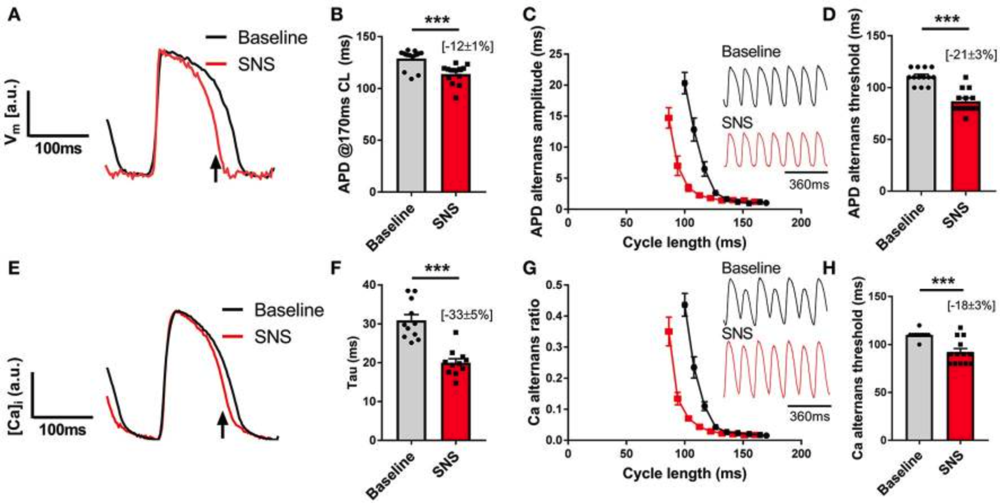
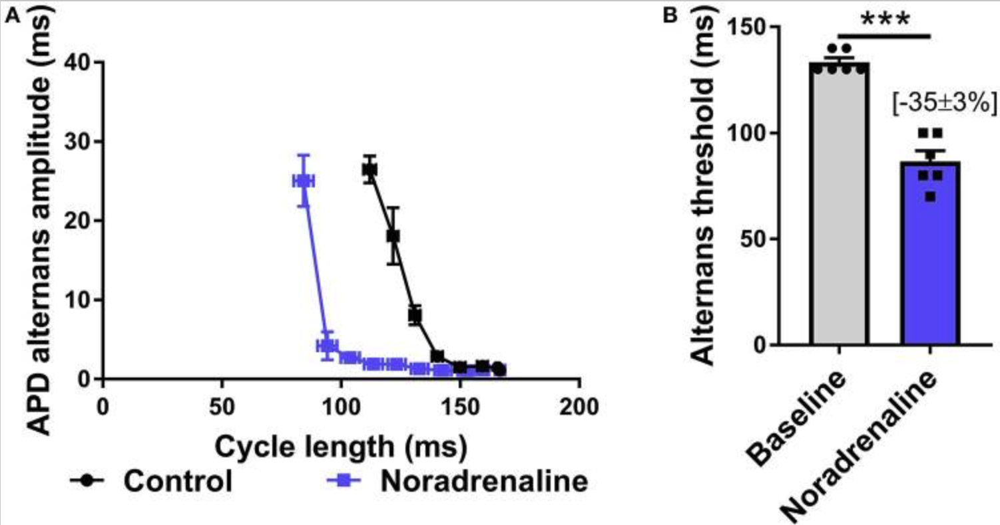
Vagal effects on APD
- Primarily mediated through \(I_{KACh}\)
- Cholinergic (vagal) leads to reduction in APD
- Activation of \(I_{KACh}\) occurs during depolarized phases of action potential
- However, acetylcholine is short-lived
- Rapidly degraded by acetylcholinesterase
- Leads to substantial localization of acetylcholine effects \(\rightarrow\) spatial heterogeneity
Mental stress and atrial arrhythmias
Background: Mental stress is associated with AF (Lampert et al. 2014; Lampert et al. 2019). Mental stress challenges capture both vagal and sympathetic branches of the ANS, which lead to specific electrical manifestations that allow for onset and maintenance of atrial arrhythmias.
Proposal: We propose to evaluate mental stress testing and manipulation of the intrinsic ANS to better understand onset and initiation of AF episodes, and contributions to its maintenance, in humans.
Approach: Using a monophasic action potential mapping catheter, we will observe APD changes to extra-stimuli protocol during mental stress challenges, and during ANS modulating interventions (SNS and PNS stimulation and blockade) during EPS. APD alternans will be recorded and subsequently analyzed.
Outline
- Historical context of atrial fibrillation
- Importance of both autonomic, structural, and triggered factors
- Comparative anatomy and physiology
- Coumel’s triangle of arrhythmology
- Substrate considerations in arrhythmic risk
- Phenotyping substrates
- Genetic variants in atrial myopathy
- Autonomic influences in arrhythmic risk
- Neurocardiac axis
- Mental stress pathways
- Future directions
Future Directions
Novel approaches
- MRI-based scar prediction to evaluate potential re-entry circuits (Lange et al. 2022)
- Combine arrhythmia probability based on substrate with features derived from autonomic testing
- University of Utah: combine ANS-based mapping to evaluate and predict future arrhythmias
- Inflammatory pathways that may affect structural and electrical remodeling (Grune, Yamazoe, and Nahrendorf 2021)
- Vagal influences on inflammatory pathways in cardiac tissue (Rajendran et al. 2024)
. . .
- ECG-informed phenotypes of AF
- Evaluation of progression of disease from paroxysmal to persistent
- Underlying genetic predisposing risk factors (e.g. rare variants)
- Polygenic risk factors for specific subtypes of AF
- Genetic evaluation of upstream, neurocardiac genes that may regulate risk of arrhythmia
Questions?
References
Antzelevitch, Charles, and Alexander Burashnikov. 2011. “Overview of Basic Mechanisms of Cardiac Arrhythmia.” Cardiac Electrophysiology Clinics 3 (1): 23–45. https://doi.org/10.1016/j.ccep.2010.10.012.
Armour, J. Andrew, David A. Murphy, Bing Xiang Yuan, Sara Macdonald, and David A. Hopkins. 1997. “Gross and Microscopic Anatomy of the Human Intrinsic Cardiac Nervous System.” Anatomical Record 247 (2): 289–98. https://doi.org/10.1002/(SICI)1097-0185(199702)247:2<289::AID-AR15>3.0.CO;2-L.
Báez-Escudero, José L., Takehiko Keida, Amish S. Dave, Kaoru Okishige, and Miguel Valderrábano. 2014. “Ethanol Infusion in the Vein of Marshall Leads to Parasympathetic Denervation of the Human Left Atrium: Implications for Atrial Fibrillation.” Journal of the American College of Cardiology 63 (18): 1892–1901. https://doi.org/10.1016/j.jacc.2014.01.032.
Calkins, Hugh, Gerhard Hindricks, Riccardo Cappato, Young-Hoon Kim, Eduardo B. Saad, Luis Aguinaga, Joseph G. Akar, et al. 2017. “2017 HRS/EHRA/ECAS/APHRS/SOLAECE Expert Consensus Statement on Catheter and Surgical Ablation of Atrial Fibrillation.” Heart Rhythm 14 (10): e275–444. https://doi.org/10.1016/j.hrthm.2017.05.012.
Carney, Robert M., Kenneth E. Freedland, and Richard C. Veith. 2005. “Depression, the Autonomic Nervous System, and Coronary Heart Disease.” Psychosomatic Medicine 67 (May): S29–33. https://doi.org/10.1097/01.psy.0000162254.61556.d5.
Cheniti, Ghassen, Konstantinos Vlachos, Thomas Pambrun, Darren Hooks, Antonio Frontera, Masateru Takigawa, Felix Bourier, et al. 2018. “Atrial Fibrillation Mechanisms and Implications for Catheter Ablation.” Frontiers in Physiology 9. https://www.frontiersin.org/articles/10.3389/fphys.2018.01458.
Choi, Seung Hoan, Lu-Chen Weng, Carolina Roselli, Honghuang Lin, Christopher M. Haggerty, M. Benjamin Shoemaker, John Barnard, et al. 2018. “Association Between Titin Loss-of-Function Variants and Early-Onset Atrial Fibrillation.” JAMA 320 (22): 2354–64. https://doi.org/10.1001/jama.2018.18179.
Coote, J H. 2013. “Myths and Realities of the Cardiac Vagus.” Journal of Physiology 591 (17): 4073–85. https://doi.org/10.1113/jphysiol.2013.257758.
Coumel, P. 1994. “Paroxysmal Atrial Fibrillation: A Disorder of Autonomic Tone?” European Heart Journal 15 Suppl A (April): 9–16. https://doi.org/10.1093/eurheartj/15.suppl_a.9.
Decloedt, Annelies, Glenn Van Steenkiste, Lisse Vera, Rikke Buhl, and Gunther van Loon. 2020. “Atrial Fibrillation in Horses Part 1: Pathophysiology.” Veterinary Journal 263: 1–8. https://doi.org/10.1016/j.tvjl.2020.105521.
Goldberger, Jeffrey J., Rishi Arora, David Green, Philip Greenland, Daniel C. Lee, Donald M. Lloyd-Jones, Michael Markl, Jason Ng, and Sanjiv J. Shah. 2015. “Evaluating the Atrial Myopathy Underlying Atrial Fibrillation.” Circulation 132 (4): 278–91. https://doi.org/10.1161/CIRCULATIONAHA.115.016795.
Grune, Jana, Masahiro Yamazoe, and Matthias Nahrendorf. 2021. “Electroimmunology and Cardiac Arrhythmia.” Nature Reviews Cardiology 18 (8, 8): 547–64. https://doi.org/10.1038/s41569-021-00520-9.
Haïssaguerre, Michel, Pierre Jaïs, Dipen C. Shah, Atsushi Takahashi, Mélèze Hocini, Gilles Quiniou, Stéphane Garrigue, Alain Le Mouroux, Philippe Le Métayer, and Jacques Clémenty. 1998. “Spontaneous Initiation of Atrial Fibrillation by Ectopic Beats Originating in the Pulmonary Veins.” New England Journal of Medicine 339 (10): 659–66. https://doi.org/10.1056/NEJM199809033391003.
Hammadah, Muhammad, Jeong Hwan Kim, Ibhar Al Mheid, Ayman Samman Tahhan, Kobina Wilmot, Ronnie Ramadan, Ayman Alkhoder, et al. 2018. “Coronary and Peripheral Vasomotor Responses to Mental Stress.” Journal of the American Heart Association 7 (10). https://doi.org/10.1161/JAHA.118.008532.
Hammadah, Muhammad, Samaah Sullivan, Brad Pearce, Ibhar Al Mheid, Kobina Wilmot, Ronnie Ramadan, Ayman Samman Tahhan, et al. 2018. “Inflammatory Response to Mental Stress and Mental Stress Induced Myocardial Ischemia.” Brain, Behavior, and Immunity 68 (February): 90–97. https://doi.org/10.1016/j.bbi.2017.10.004.
Herring, Neil, James Cranley, Michael N Lokale, Dan Li, Julia Shanks, Eric N Alston, Beatrice M Girard, et al. 2012. “The Cardiac Sympathetic Co-Transmitter Galanin Reduces Acetylcholine Release and Vagal Bradycardia: Implications for Neural Control of Cardiac Excitability.” Journal of Molecular and Cellular Cardiology 52 (3): 667–76. https://doi.org/10.1016/j.yjmcc.2011.11.016.
Herring, Neil, Michael N Lokale, Edward J Danson, Daniel A Heaton, and David J Paterson. 2008. “Neuropeptide Y Reduces Acetylcholine Release and Vagal Bradycardia via a Y2 Receptor-Mediated, Protein Kinase C-dependent Pathway.” Journal of Molecular and Cellular Cardiology 44 (3): 477–85. https://doi.org/10.1016/j.yjmcc.2007.10.001.
Hoang, Jonathan D., Siamak Salavatian, Naoko Yamaguchi, Mohammed Amer Swid, and Marmar Vaseghi. 2020. “Cardiac Sympathetic Activation Circumvents High-Dose Beta Blocker Therapy in Part Through Release of Neuropeptide Y.” JCI Insight 5 (11). https://doi.org/10.1172/JCI.INSIGHT.135519.
Hoover, D. B., E. R. Isaacs, F. Jacques, J. L. Hoard, P. Pagé, and J. A. Armour. 2009. “Localization of Multiple Neurotransmitters in Surgically Derived Specimens of Human Atrial Ganglia.” Neuroscience 164 (3): 1170–79. https://doi.org/10.1016/j.neuroscience.2009.09.001.
Huang, Minxuan, Amit Shah, Shaoyong Su, Jack Goldberg, Rachel J. Lampert, Oleksiy M. Levantsevych, Lucy Shallenberger, Pratik Pimple, J. Douglas Bremner, and Viola Vaccarino. 2018. “Association of Depressive Symptoms and Heart Rate Variability in Vietnam War–Era Twins.” JAMA Psychiatry 75 (7): 705. https://doi.org/10.1001/jamapsychiatry.2018.0747.
Kalla, Manish, Guoliang Hao, Nidi Tapoulal, Jakub Tomek, Kun Liu, Lavinia Woodward, Erica Dall’Armellina, et al. 2020. “The Cardiac Sympathetic Co-Transmitter Neuropeptide Y Is Pro-Arrhythmic Following ST-elevation Myocardial Infarction Despite Beta-Blockade.” European Heart Journal 41 (23): 2168–79. https://doi.org/10.1093/eurheartj/ehz852.
Kim, Jeong Hwan, Zakaria Almuwaqqat, Muhammad Hammadah, Chang Liu, Yi An Ko, Bruno Lima, Samaah Sullivan, et al. 2019. “Peripheral Vasoconstriction During Mental Stress and Adverse Cardiovascular Outcomes in Patients With Coronary Artery Disease.” Circulation Research 125 (10): 874–83. https://doi.org/10.1161/CIRCRESAHA.119.315005.
Kim, Min-Young, Clare Coyle, David R. Tomlinson, Markus B. Sikkel, Afzal Sohaib, Vishal Luther, Kevin M. Leong, et al. 2022. “Ectopy-Triggering Ganglionated Plexuses Ablation to Prevent Atrial Fibrillation: GANGLIA-AF Study.” Heart Rhythm 19 (4): 516–24. https://doi.org/10.1016/j.hrthm.2021.12.010.
Lampert, Rachel, Matthew M. Burg, Larry D. Jamner, James Dziura, Cynthia Brandt, Fangyong Li, Theresa Donovan, and Robert Soufer. 2019. “Effect of β-Blockers on Triggering of Symptomatic Atrial Fibrillation by Anger or Stress.” Heart Rhythm 16 (8): 1167–73. https://doi.org/10.1016/j.hrthm.2019.03.004.
Lampert, Rachel, Lawrence Jamner, Matthew Burg, James Dziura, Cynthia Brandt, Haibei Liu, Fangyong Li, Theresa Donovan, and Robert Soufer. 2014. “Triggering of Symptomatic Atrial Fibrillation by Negative Emotion.” Journal of the American College of Cardiology 64 (14): 1533–34. https://doi.org/10.1016/j.jacc.2014.07.959.
Lange, Matthias, Eugene Kwan, Derek J. Dosdall, Rob S. MacLeod, T. Jared Bunch, and Ravi Ranjan. 2022. “Case Report: Personalized Computational Model Guided Ablation for Left Atrial Flutter.” Frontiers in Cardiovascular Medicine 9. https://www.frontiersin.org/articles/10.3389/fcvm.2022.893752.
Lima, Bruno B, Muhammad Hammadah, Jeong Hwan Kim, Irina Uphoff, Amit Shah, Oleksiy Levantsevych, Zakaria Almuwaqqat, et al. 2019. “Association of Transient Endothelial Dysfunction Induced by Mental Stress With Major Adverse Cardiovascular Events in Men and Women With Coronary Artery Disease.” JAMA Cardiology 4 (10): 988–96. https://doi.org/10.1001/jamacardio.2019.3252.
Mahnkopf, Christian, Troy J. Badger, Nathan S. Burgon, Marcos Daccarett, Thomas S. Haslam, Christopher T. Badger, Christopher J. McGann, et al. 2010. “Evaluation of the Left Atrial Substrate in Patients with Lone Atrial Fibrillation Using Delayed-Enhanced MRI: Implications for Disease Progression and Response to Catheter Ablation.” Heart Rhythm 7 (10): 1475–81. https://doi.org/10.1016/j.hrthm.2010.06.030.
Meijler, Frits L., Fred H. M. Wittkampf, Kenneth R. Brennen, Verne Baker, Claes Wassenaar, and Earl E. Bakken. 1992. “Electrocardiogram of the Humpback Whale (Megaptera Noaeangliae) with Specific Reference to Atrioventricular Transmission and Ventricular Excitation.” Journal of the American College of Cardiology 20 (2): 475–79. https://doi.org/10.1016/0735-1097(92)90120-C.
Michaud, Gregory F., and William G. Stevenson. 2021. “Atrial Fibrillation.” New England Journal of Medicine 384 (4): 353–61. https://doi.org/10.1056/NEJMcp2023658.
Narayan, Sanjiv M., Michael R. Franz, Paul Clopton, Etienne J. Pruvot, and David E. Krummen. 2011. “Repolarization Alternans Reveals Vulnerability to Human Atrial Fibrillation.” Circulation 123 (25): 2922–30. https://doi.org/10.1161/CIRCULATIONAHA.110.977827.
Narayan, Sanjiv M., David E. Krummen, and Wouter-Jan Rappel. 2012. “Clinical Mapping Approach To Diagnose Electrical Rotors and Focal Impulse Sources for Human Atrial Fibrillation.” Journal of Cardiovascular Electrophysiology 23 (5): 447–54. https://doi.org/10.1111/j.1540-8167.2012.02332.x.
Packer, Milton. 2020. “Characterization, Pathogenesis, and Clinical Implications of Inflammation‐Related Atrial Myopathy as an Important Cause of Atrial Fibrillation.” Journal of the American Heart Association 9 (7): e015343. https://doi.org/10.1161/JAHA.119.015343.
Pappone, Carlo, Vincenzo Santinelli, Francesco Manguso, Gabriele Vicedomini, Filippo Gugliotta, Giuseppe Augello, Patrizio Mazzone, et al. 2004. “Pulmonary Vein Denervation Enhances Long-Term Benefit After Circumferential Ablation for Paroxysmal Atrial Fibrillation.” Circulation 109 (3): 327–34. https://doi.org/10.1161/01.CIR.0000112641.16340.C7.
Penninx, Brenda W. J. H. 2017. “Depression and Cardiovascular Disease: Epidemiological Evidence on Their Linking Mechanisms.” Neuroscience and Biobehavioral Reviews 74: 277–86. https://doi.org/10.1016/j.neubiorev.2016.07.003.
Pollitt, R. A., J. S. Kaufman, K. M. Rose, A. V. Diez-Roux, D. Zeng, and G. Heiss. 2008. “Cumulative Life Course and Adult Socioeconomic Status and Markers of Inflammation in Adulthood.” Journal of Epidemiology and Community Health 62 (6): 484–91. https://doi.org/10.1136/jech.2006.054106.
Rajendran, Pradeep S., Joseph Hadaya, Sahib S. Khalsa, Chuyue Yu, Rui Chang, and Kalyanam Shivkumar. 2024. “The Vagus Nerve in Cardiovascular Physiology and Pathophysiology: From Evolutionary Insights to Clinical Medicine.” Seminars in Cell & Developmental Biology 156 (March): 190–200. https://doi.org/10.1016/j.semcdb.2023.01.001.
Rivner, Harold. 2020. “Atrial Myopathy Underlying Atrial Fibrillation,” May. https://www.aerjournal.com/articles/atrial-myopathy-underlying-atrial-fibrillation.
Shivkumar, Kalyanam, Olujimi A. Ajijola, Inder Anand, J. Andrew Armour, Peng Sheng Chen, Murray Esler, Gaetano M. De Ferrari, et al. 2016. “Clinical Neurocardiology Defining the Value of Neuroscience-Based Cardiovascular Therapeutics.” Journal of Physiology 594 (14): 3911–54. https://doi.org/10.1113/JP271870.
Smolderen, Kim G., Donna M. Buchanan, Kensey Gosch, Mary Whooley, Paul S. Chan, Viola Vaccarino, Susmita Parashar, Amit J. Shah, P. Michael Ho, and John A. Spertus. 2017. “Depression Treatment and 1-Year Mortality After Acute Myocardial Infarction: Insights from the TRIUMPH Registry (Translational Research Investigating Underlying Disparities in Acute Myocardial Infarction Patients’ Health Status).” Circulation 135 (18): 1681–89. https://doi.org/10.1161/CIRCULATIONAHA.116.025140.
Strike, P C, and A Steptoe. 2003. “Systematic Review of Mental Stress-Induced Myocardial Ischaemia.” European Heart Journal 24 (8): 690–703. https://doi.org/10.1016/S0195-668X(02)00615-2.
Taggart, Peter, Mark R Boyett, Sunil Jit R. J. Logantha, and Pier D Lambiase. 2011. “Anger, Emotion, and Arrhythmias: From Brain to Heart.” Frontiers in Physiology 2 OCT. https://doi.org/10.3389/fphys.2011.00067.
Verweij, Niek, Jan-Walter Benjamins, Michael P. Morley, Yordi J. Van De Vegte, Alexander Teumer, Teresa Trenkwalder, Wibke Reinhard, Thomas P. Cappola, and Pim Van Der Harst. 2020. “The Genetic Makeup of the Electrocardiogram.” Cell Systems 11 (3): 229–238.e5. https://doi.org/10.1016/j.cels.2020.08.005.
Williams, Terrie M., Lee A. Fuiman, Traci Kendall, Patrick Berry, Beau Richter, Shawn R. Noren, Nicole Thometz, et al. 2015. “Exercise at Depth Alters Bradycardia and Incidence of Cardiac Anomalies in Deep-Diving Marine Mammals.” Nature Communications 6 (1, 1): 6055. https://doi.org/10.1038/ncomms7055.
Wineinger, Nathan E., Paddy M. Barrett, Yunyue Zhang, Ikram Irfanullah, Evan D. Muse, Steven R. Steinhubl, and Eric J. Topol. 2019. “Identification of Paroxysmal Atrial Fibrillation Subtypes in over 13,000 Individuals.” Heart Rhythm 16 (1): 26–30. https://doi.org/10.1016/j.hrthm.2018.08.012.
Winter, James, Martin J. Bishop, Catherine D. E. Wilder, Christopher O’Shea, Davor Pavlovic, and Michael J. Shattock. 2018. “Sympathetic Nervous Regulation of Calcium and Action Potential Alternans in the Intact Heart.” Frontiers in Physiology 9 (January): 16. https://doi.org/10.3389/fphys.2018.00016.